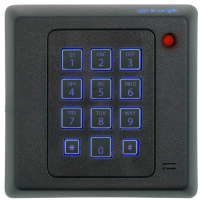

2.2. Control de accesos¶
Vetar el acceso a personas no autorizadas garantiza que evitemos dos amenazas:
El vandalismo.
El robo de datos.
Ahora bien, el acceso puede ser de dos tipos:
Acceso físico.
Acceso lógico.
El epígrafe está dedicado al análisis del control de ambos accesos.
2.2.1. Acceso físico¶
El control del acceso físico es fundamental para salvaguardar la integridad y el funcionamiento del sistema, no ya sólo para evitar accesos malintencionados sino para evitar que personal poco cualificado pueda provocar involuntariamente algún problema. Este control se materializa tanto en la vigilancia como en la restricción al paso.
2.2.1.1. Vigilancia¶
La vigilancia permite monitorizar cualquier intento de acceso y se materializa en:
Alarmas.
Cámaras de vigilancia.
Personal de vigilancia.
La vigilancia puede o no desencadenar una respuesta de restricción al paso. Por ejemplo, un vigilante al cargo de una cámara puede actuar si ésta detecta la presencia de alguien sospechoso.
En el caso particular de las cámaras de vigilancia, cuando se pretendía desencadenar una respuesta (seguridad activa) y no sólo simplemente registro (seguridad pasiva), estas tradicionalmente se conectaban a un circuito cerrado de televisión lo que obligaba a que el personal de vigilancia se encontrara en el propio edificio. La situación ha cambiado, sin embargo, con la aparición de las cámaras IP que permiten retransmitir a través de la red las imágenes.
2.2.1.2. Restricción al paso¶
Las restricciones al paso suponen vetar el acceso al espacio físico del servidor a toda persona no autorizada. Puede conseguirse a través:
- Personal de vigilancia
esto es, personal humano que controla que sólo acceda al espacio reservado el personal autorizado.
- Teclados
Los teclados permiten el acceso si se teclea una combinación adecuada:
- Tarjetas de acceso
Sustituir las llaves tradicionales por tarjetas de acceso, tiene algunas ventajas:
Puede limitarse el acceso a determinados horarios.
Puede revocarse el acceso sin que tener que recuperar la tarjeta.
Puede establecerse una caducidad a la tarjeta.
- Controles biométricos
Los sistemas biométricos de control de acceso verifican la identidad de una persona a través de una o varias de sus características físcias únicas:
Voz.
Huella dactilar.
Ojo (bien el iris, bien la retina).
Reconocimiento facial (tanto 2D como 3D).
Reconocimientp vascular (del dedo o de la mano), esto es, el reconocimiento de la geometría del árbol de venas del dedo o la mano.
Escritura y firma.
Características
Al analizar un sistema de control biométrico es preciso tener en cuenta las siguientes características:
Universalidad, es decir, que el rasgo biométrico lo posean todos los individuos.
Fiabilidad, esto es, que dada la muestra y en ausencia de fraude, no haya confusión de a quién pertenece.
Estabilidad, esto es, que el patrón biométrico permanezca inalterado a lo largo del tiempo.
Usabilidad.
Atacabilidad, esto es, la facilidad de prestarse a fraudes. Por ejemplo, muchos sistemas de reconocimiento facial en 2D son incapaces de distinguir la cara de un individuo de una fotografía del propio individuo
Aceptación, esto es, la falta de reticencia de los individuos a someterse a tal control.
Tabla comparativa entre sistemas biométricos (fuente: Wikipedia)¶ Característica
Iris
Retina
Huella
Vascular dedo
Vascular mano
Geometría mano
Escritura/firma
Voz
Cara 2D
Cara 3D
Fiabilidad
++
++
++
++
++
+
=
+
=
+
Usabilidad
=
-
+
++
++
+
+
+
+
+
Atacabilidad
-
--
-
--
--
-
=
=
=
-
Aceptación
=
-
+
+
+
+
++
+
++
++
Estabilidad
+
+
+
+
+
=
-
=
=
+
Debilidades
Los controles biométricos, aunque en general de gran fiabilidad, presentan algunas debilidades:
Los robos de patrones o muestras biométricas son irreversibles, ya que a diferencia de un código o una tarjeta de acceso, no pueden ser revocados. Aunque se aleje del propósito de un epígrafe, supongamos que alguien introduce en la escena de un crimen, ADN de un inocente.
La posibilidad de que alguien relacione sus propios patrones biométricos con la identidad de un tercero.
Se presta a usarse para el control autoritario de la población.
Es, por ello, que los datos biométricos son considerados en las legislaciones sobre protección de datos, datos especialmente sensibles y, en consecuencia, gozan de una especial protección.
2.2.2. Acceso lógico¶
El acceso lógico es el acceso a través de algún servicio que posibilita el ingreso de un cliente externo al interior del sistema informático. El servicio es, generalmente, un servicio de red. ya que, si no existe acceso físico, no es posible acercarse al equipo.
Nota
Tenga presente que, cuando estamos sentados frente a nuestro ordenador, tenemos acceso físico ya que nos encontramos junto a él; pero, al introducir usuario y (generalmente) contraseña, practicamos el acceso lógico a través de un servicio de autenticación que no es de red.
Hay dos procesos relacionados con el control de accesos lógico:
La autenticación.
La autorización.
2.2.2.1. Autenticación¶
La autenticación es el proceso con el que se comprueba la identidad de un agente que desea acceder o realizar alguna operación en el sistema.
Para ella los sistemas definen un conjunto de usuarios cuya identidad se comprueba muy a menudo mediante contraseña, aunque pueden existir otros sistemas, cada vez más frecuentes, como la huella dactilar.
2.2.2.1.1. Autenticación por contraseña¶
La autenticación por contraseña es el tipo de autenticación más habitual: al usuario se le asigna una contraseña secreta para que junto al nombre de usuario la introduzca sobre su ingreso. Si el usuario existe y la contraseña es la correcta, el proceso de autenticación tendrá éxito.
Para mejorar la seguridad de este tipo de autenticación suelen implementarse varias argucias que no son incompatibles entre sí:
Las contraseñas nunca se almacenan en claro, sino que el resumen generado por una función de hash, de modo que. cuando se produce un ingreso, a la contraseña introducida por el usuario se le aplica la misma función y se compara el resumen generado con el almacenado. Si coinciden es prácticamente seguro que se introdujo la contraseña original y, en consecuencia, la autenticación tiene éxito. Se obra así para que, si se produce un robo del fichero de contraseñas, el ladrón no tenga directamente a su disposición todas las contraseñas, sino que tenga que aplicar técnicas de fuerza bruta para lograr averiguar alguna.
Nota
Échele un vistazo al
/etc/shadowde un Linux cualquiera y compruebe cómo las contraseñas no se guardan en claro.Se define una política de contraseñas que les garantize un mínimo de complejidad. Hablaremos de ella a continuación.
Modernamente se ha introdicido el concepto de autenticación en dos pasos que también trataremos más adelante.
Política de contraseñas
La política de contraseñas es el conjunto de reglas que se establecen en la definición, redefinición y uso de contraseñas para evitar que éstas sean fácilmente deducibles por un atacante. Téngase presente que ha de llegarse a cierto equilibrio, puesto que si a resultas de esta política, las contraseñas son extraordinariamente complicadas y largas, lo más probable es que muchos usuarios acaben por apuntarlas en un papel de su mesa de escritorio o en un post-it adherido al propio monitor.
Los criterios que se definen en estas políticas son estos:
Su fortaleza determinada por:
Una longitud mínima que, normalmente, no se define inferior a 8 caracteres.
La obligación de incluir caracteres de distinto tipo, distinguiéndose entre:
Letras mayúsculas.
Letras minúsculas.
Dígitos.
Otros caracteres.
Por ejemplo, puede exigirse que la contraseña contenga al menos tres de estos cuatro tipos, o que contenga los cuatro tipos.
Impedir que la contraseña incluya el nombre de usuario o partes sustanciales de este. El criterio se puede ampliar a evitar coincidencias con otros datos personales como el nombre real o la fecha de nacimiento.
Impedir la reutilización de la última contraseña o, en general, de las «n» últimas contraseñas.
Si se hace un bloqueo temporal del usuario cuando se ha fallado un determinado número de veces en la introducción de la contraseña (p.e. un bloqueo de 15 minutos antes 5 intentos fallos de autenticación). Esta prevención evita los ataques de fuerza bruta.
Limitaciones temporales:
Establecer un tiempo de caducidad, llegado al cual se fuerza al usuario a redefinir la contraseña.
Establecer un tiempo mínimo para la redefinición. Esta limitación tiene bastante importancia si queremos impedir la reutilización de la contraseña y nos limitamos a evitar coincida con la última. Sin este tiempo, el usuario al caducar la contraseña, podría cambiarla e, inmediatamente, volver a realizar otro cambio para dejar la contraseña original.
Nota
En Linux estas políticas pueden implementarse gracias a algunos módulos de PAM:
pam_cracklib para implementar los criterios relacionados con la fortaleza.
pam_tally2(8) para implementar el bloqueo tras repetidos fallos de autenticación1.
chage para establecer los criterios temporales.
En Windows 10 también es posible manipular la seguridad para las contraseñas gracias a la «política de seguridad local» (secpol.msc). Para más información, puede leer este artículo de Renee Lab.
2.2.2.1.2. Autenticación con claves¶
Este tipo de autenticación se lleva a cabo mediante criptografía de clave asimétrica, por lo que su estudio debe hacerse dentro de la unidad dedicada a Criptografía.
2.2.2.1.3. Autenticación biométrica¶
Se ha extendido, sobre todo en los dispositivos móviles, la autenticación o el desbloqueo mediante huella dactilar.
2.2.2.1.4. Autenticación en dos pasos (2FA)¶
La autenticación en dos pasos consiste en considerar válida la acreditación cuando el usuario es capaz de presentar dos pruebas diferentes de su identidad aportando o algo que saben o algo que tienen o algo que son. Un ejemplo bastante extendido y ya consolidado de este tipo de autenticación es la que se produce al retirar dinero de un cajero automático en la que al cliente se le exige algo que tiene (la tarjeta) y algo que sabe sabe (el PIN de la misma).
Cualquier combinación de dos pruebas diferentes es válida. Por ejemplo. podríamos aportar una prueba biométrica (algo que somos) y un certificado digital (algo que tenemos), pero es muy común que una de las dos pruebas sea una contraseña (algo que sabemos). Precisamente uno de los puntos débiles de la autenticación por contraseña es la poca diligencia que siempre muestra el usuario en modificarla y mantenerla segura; y la autenticación 2FA palía esta falta al exigir, además, que el usuario porte consigo algo propio. Así, es frecuente que este autenticación se implemente del siguiente modo:
La autenticación previa mediante usuario y contraseña.
El envío de un tóken mediante SMS o aplicación móvil a su teléfono particular, que confirma la identidad.
Esta autenticación es ya obligatoria para entidades bancarias por directrices de la Autoridad Bancaria Europea (EBA). Es cierto que desde hace ya mucho tiempo, los bancos usan autenticación 2FA para el acceso telemático de sus clientes como una combinación de usuario y contraseña (algo que se sabe); y tarjeta de coordenadas (algo que se posee). Sin embargo, la información de una tarjeta de coordenadas es algo estático y fácilmente reproducible si se tiene acceso físico a ella por un momento. Por consiguiente, sustituir esta información estática por otra dinámica (el tóken) aumenta considerablemente la seguridad.
El RGPD, aunque sólo menciona expresamente el cifrado, abre la posibilidad a implantar medidas que palíen la falibilidad humana y, por tanto, al uso de la autenticación 2FA.
2.2.2.2. Autorización¶
La autorización es el proceso con el que se comprueba que un usuario identificado tiene permiso para acceder a un recurso o realizar una acción. Hay, fundamentalmente, tres filosofías para la concesión de autorizaciones que reciben el nombre de mecanismos de control de acceso.
2.2.2.2.1. Mecanismos de control de acceso¶
Control de accesos discrecional (DAC)
Es el mecanismo más habitual en que la seguridad se basa en la identidad de los usuarios y en los permisos que se otorgan a éstos sobre los distintos objetos del sistema. En él cada objeto tiene por propietario a un usuario y es éste el que tiene potestad para conceder, a discreción, permisos sobre su propiedad al resto de los usuarios. En consecuencia, el control de la seguridad no está centralizado, sino que cada usuario decide sobre la seguridad de los objetos que le pertenecen.
Es el mecanismo que suelen implementar de serie los sistemas operativos (Windows, Linux, etc.), y presentan dos aproximaciones distintas para la definición de estos permisos discrecionales:
El tradicional en los sistemas UNIX es el sistema POSIX, conocido también como UGO, que define para cada objeto del sistema de ficheros un usuario propietario y un grupo propietario, de suerte que se definen tres grados de accesibilidad (permisos) distintos: para el propietario, para los usuarios pertenecientes al grupo propietario y para el resto de usuarios. Esa es la razón de su nombre y a esta técnica dedicamos la definición elemental de permisos.
Las listas de control de accesos (ACL) que consisten en poder definir para cada objeto los conjuntos de permisos para cualesquiera usuarios y cualesquiera grupos. Por lo general se define un conjunto de permisos por defecto, que serán los que tengan los usuarios que no aparezcan en la lista o no pertenezcan a alguno de los grupos incluidos en la lista. Este es el método que usa Windows, aunque en los sistemas UNIX modernos se puede habilitar como complemento del anterior para aquellos objetos en los que no sea suficiente el sistema POSIX, que es menos granular. Este será uno de los aspectos avanzados que tratemos.
Control de accesos obligatorio (MAC)
Este mecanismo se caracteriza porque el control está centralizado. El mecanismo se basa en la definición de etiquetas sobre los objetos que indican su nivel de sensibilidad (p.e. desclasificado, restringido, confidencial, secreto y alto secreto) y la definición de etiquetas sobre los sujetos que indican su nivel de acceso, de manera que el sujeto podrá actuar sobre el objeto sólo si tiene un nivel de acceso superior al de la sensibilidad del objeto.
Todas estas políticas de acceso se definen de forma centralizada, sin que ningún usuario de forma discrecional pueda conceder a otros privilegios.
En Linux hay posibilidad de implementar este mecanismo de seguridad a través de SELinux, que usa entre otras RedHat, o Apparmor, que usan SuSE, Ubuntu o Debian (a partir de su versión 10). De hecho, es normal que en los linux modernos, este mecanismo esté habilitado por defecto.
Control de accesos basado en roles (RBAC)
En este mecanismo se predefinen una serie de roles, a cada uno de los cuales se le asigna una serie de privilegios. Un administrador asignará a cada usuario uno o varios roles, de modo que los privilegios del usuario dependerán de cuál sea el rol o los roles que desempeñe.
En cierta medida, es equivalente a un modelo DAC con ACLs en el que se asignan permisos exclusivamente a grupos de usuarios, no a usuarios particulares.
Aunque no sea el ejemplo de un sistema operativo, la plataforma Moodle implementa un control de accesos basado en roles.
2.2.2.2.2. Permisos DAC¶
El control discrecional de accesos es el más comúnmente implementado en los sistemas operativos (sin perjuicio de que se pueda complementar con algún otro mecanismo), así que a él dedicaremos el resto del epígrafe.
DAC consiste en definir reglas de acceso para cada recurso y se implementa mayoritariamente utilizando dos estrategias distintas:
El sistemas de permisos POSIX (esto es, el sistema UGO), utilizado en los sistemas UNIX y que ya debió estudiarse en el módulo de Sistemas Operativos Monopuesto.
Las listas de control de accesos que permiten en cada recurso definir reglas específicas para cada usuario y grupo. Windows utiliza este sistema por defecto, lo cual implica que debió verse en el módulo de Sistemas Operativos Monopuesto. En Linux, en cambio, es opcional y sólo es necesario recurrir a él cuando el sistema POSIX, que es más simple, no resulta suficiente, razón por la cual no suele incorporarse a un curso básico sobre este sistema operativo, como es el que se imparte en Sistemas Operativos Monopuesto.
Así pues, la única tarea pendiente en este módulo es el estudio de los permisos ACL en Linux.
2.2.2.3. Ejercicios sobre acceso lógico¶
Mejore la seguridad de las contraseñas en Windows 10 y Linux, de manera que:
Las contraseñas sean complejas: tengan al menos tres de los cuatro tipos de caracteres posibles (minúsculas, mayúsculas, números y signos de puntuación), tengan una longitud mínima (9 caracteres), etc.
No puedan coincidir con el nombre de usuario y no sean semejante a la contraseña antigua.
No puedan mantenerse más de 3 meses, haya que esperar al menos 3 días desde el úiltimo cambio de contraseña para poder volver a hacerla y se advierta de que la contraseña está próxima a expirar desde una semana antes.
Se desea compartir el directorio
/home/almacenentre varios usuarios y grupos de manera que:Existen los grupos «jefes» y «currelas».
«donalfonso» y «donmanuel» son jefes y «paco» y «pepe» son «currelas». No tiene grupos propios sino que sus grupos principales son esos.
En el directorio pueden leer y escribir ambos grupos.
En cualquier subdirectorio, ocurrirá lo mismo.
Nadie más podrá tener permisos sobre el directorio o subdirectorios.
Defina el directorio
/home/paratodosdel siguiente modo:Hay sólo dos grupos en el sistema («grupoA» y «grupoB») que podrán escribir sobre él. Los usuarios o pertenecen a uno o a otro grupo y los tienen por su grupo principal (se le aconseja que cree un par de usuarios de prueba).
Hay otro grupo llamado «lectores» que podrá acceder al grupo para ver su contenido.
Sobre cualquiera archivo o directorio creado dentro del directorio el grupo «A» tendrá control absoluto, mientras que el grupoB y lectores podrán leer.
¿Qué puede hacer si en algún momento necesita temporalmente dejar sólo permisos de lectura a los tres grupos?
Notas al pie